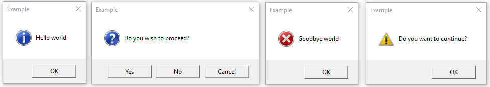

tkinter.messagebox — Prompts de mensagem do Tkinter¶
Código-fonte: Lib/tkinter/messagebox.py
The tkinter.messagebox module provides a template base class as well as
a variety of convenience methods for commonly used configurations.
The message boxes are modal: each blocks until the user responds, then returns
a value that depends on the function.
The show* functions and Message.show() return the symbolic name of
the button the user pressed, as a string (such as OK or YES).
Common message box styles and layouts include but are not limited to:

- class tkinter.messagebox.Message(master=None, **options)¶
Criar uma janela de mensagem com uma mensagem específica da aplicação, um ícone e um conjunto de botões. Cada botão na janela é identificado com um nome simbólico único (veja as opções de “type”).
As seguintes opções são suportadas:
- “command”
Especifica a função que será invocada quando o usuário fecha a janela de diálogo. O nome do botão clicado pelo usuário para fechar a janela é passada como um argumento. Esta funcionalidade está disponível apenas no macOS.
- “default”
Fornece o nome simbólico do botão padrão para essa janela de mensagem (
OK,CANCEL, e assim por diante). Se essa opção não for especificada, o primeiro botão da caixa de diálogo será o padrão.- “detail”
Especifica uma mensagem auxiliar para a mensagem principal fornecida pela opção message. Esta mensagem será apresentado abaixo da mensagem principal e, quando suportado pelo sistema operacional, em uma fonte menos enfatizada do que a mensagem principal.
- “icon”
Especifica um icon a ser apresentado. Se essa opção não for especificada, o ícone
INFOserá exibido.- “message”
Especifica a mensagem para mostrar nessa caixa de mensagem. O padrão valor é uma string vazia.
- “parent”
Torna a janela especificada a janela pai da caixa de mensagem. A caixa de mensagem é exibida na parte superior de sua janela pai.
- “title”
Especifica uma string para mostrar como o título da caixa de mensagem. Essa opção é ignorada no macOS, onde a plataforma proíbe o uso de um título nesse tipo de caixa de diálogo.
- “type”
Organiza um conjunto predefinido de botões a serem mostrados.
Nota
Tk 8.6 added the command option.
- show(**options)¶
Mostra uma janela de mensagem e aguarda que o usuário selecione um dos botões. Em seguida, retorna o nome simbólico do botão selecionado. Argumentos nomeados pode substituir opções especificadas no construtor.
Caixa de mensagem de informação
- tkinter.messagebox.showinfo(title=None, message=None, **options)¶
Cria e exibe uma caixa de mensagem informativa com o título e a mensagem especificados.
Caixas de mensagem de atenção
- tkinter.messagebox.showwarning(title=None, message=None, **options)¶
Cria e exibe uma caixa de mensagem de alerta com o título e a mensagem especificados.
- tkinter.messagebox.showerror(title=None, message=None, **options)¶
Cria e exibe uma caixa de mensagem de erro com o título e a mensagem especificados.
Caixas de mensagem de dúvida
- tkinter.messagebox.askquestion(title=None, message=None, *, type=YESNO, **options)¶
Faz uma pergunta. Por padrão mostra os botões
YESeNO. Retorna o nome simbólico do botão selecionado.
- tkinter.messagebox.askokcancel(title=None, message=None, **options)¶
Pergunta se a operação deve prosseguir. Mostra os botões
OKeCANCEL. RetornaTruese a resposta for “OK” eFalsecaso contrário.
- tkinter.messagebox.askretrycancel(title=None, message=None, **options)¶
Ask if operation should be retried. Shows buttons
RETRYandCANCEL. ReturnTrueif the answer is retry andFalseotherwise.
- tkinter.messagebox.askyesno(title=None, message=None, **options)¶
Faz uma pergunta. Mostra os botões
YESeNO. RetornaTruese a resposta for sim eFalsecaso contrário.
- tkinter.messagebox.askyesnocancel(title=None, message=None, **options)¶
Faz uma pergunta. Mostra os botões
YES,NOeCANCEL. RetornaTruese a resposta for sim,Nonese cancelado, eFalsecaso contrário.
Nomes simbólicos dos botões:
- tkinter.messagebox.ABORT = 'abort'¶
- tkinter.messagebox.RETRY = 'retry'¶
- tkinter.messagebox.IGNORE = 'ignore'¶
- tkinter.messagebox.OK = 'ok'¶
- tkinter.messagebox.CANCEL = 'cancel'¶
- tkinter.messagebox.YES = 'yes'¶
- tkinter.messagebox.NO = 'no'¶
Conjunto predefinido de botões:
- tkinter.messagebox.ABORTRETRYIGNORE = 'abortretryignore'¶
Exibe três botões cujos nomes simbólicos são
ABORT,RETRYeIGNORE.
- tkinter.messagebox.OK = 'ok'
Exibe um botão cujo nome simbólico é
OK.
- tkinter.messagebox.RETRYCANCEL = 'retrycancel'¶
Exibe dois botões cujos nomes simbólicos são
RETRYeCANCEL.
- tkinter.messagebox.YESNOCANCEL = 'yesnocancel'¶
Exibe três botões cujos nomes simbólicos são
YES,NOeCANCEL.
Imagens de ícones:
- tkinter.messagebox.ERROR = 'error'¶
- tkinter.messagebox.INFO = 'info'¶
- tkinter.messagebox.QUESTION = 'question'¶
- tkinter.messagebox.WARNING = 'warning'¶